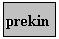
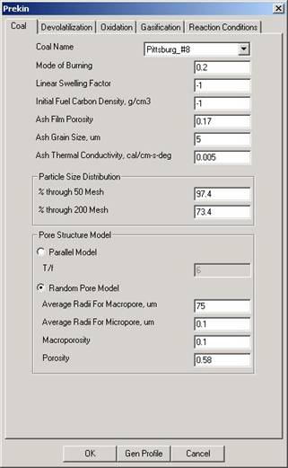
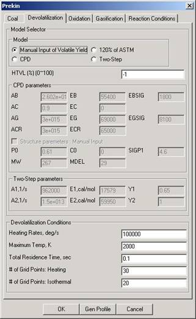
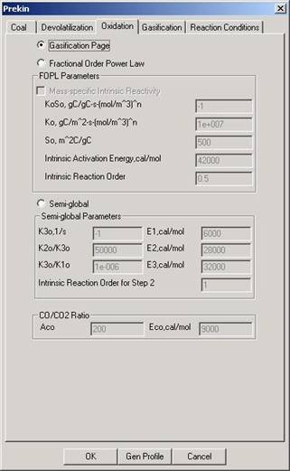
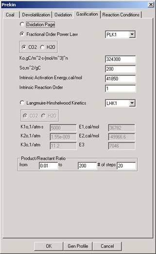
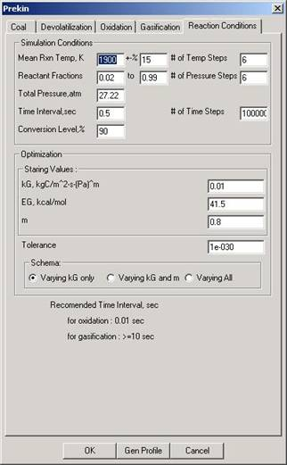

PREKIN Module (Kinetics Pre-processor)
The PREKIN tool is
designed for easy use by engineers and scientists with an advanced level of
understanding of the physics, chemistry and modeling methods used for high
pressure gasification kinetics. It is not intended for the casual user.
PREKIN requires numerous, detailed inputs for coal parameters
(typically obtained from laboratory tests), reaction conditions within the gasifier and model parameters. The inputs are organized
into five panels
- general
coal information
- devolitization kinetics
- oxidation
kinetics
- char
gasification kinetics
- reaction
conditions in the gasifier
No
Connections
- This
module runs by itself to generate a profile used by GasifierCFD.

Coal
This panel is used to enter general properties of the coal.
Required items include the coal type (can select coal types contained in a database),
coal swelling factor, ash characteristics, coal grind (mass of particles
through 50 and 200 mesh), and pore structure information. More generic coal
data such as ultimate and proximate analysis is accessed via the coal database
capability within the framework.
Devolitization
In this panel the user selects the devolilization
model to use. Options include manual input of volatile, 120% of ASTM volatile
yield value determined in the ultimate/proximate analysis, CPD [Brown et al, xxxx], or a
two step model [Kobayashi, 1978]. These models
and their corresponding parameters are described in more detail in the section
entitled Devolatilization located above.
Oxidation
In this panel the user selects the oxidation model to use
and enters corresponding numerical parameters. The available options include
re-use of values from the char gasification model inputs, fractional order
power law, semi-global kinetic rates or specifying the CO:O2
ratio. For additional detail on the different models and model parameters see
the section entitled Oxidation located above.
Gasification
In this panel the user can select from different options on
how to model the char gasification. Available models
include using information from the oxidation model inputs (?), fractional order
power law for CO2 and/or H2O, Langmuir-Hinshelwood
kinetics or specififying the product/reactant ratio.
Additional details on these models and their corresponding numerical parameters
are provided above in the section entitled Gasification.
Reaction Conditions
This input panel is used to enter general conditions that
are expected to occur within the gasifier as well as
required numerical parameters.
The outputs from the model are gasification rates (numerical
values) that can be used in most modeling tools intended for modeling coal
combustion or gasification. Within the framework, the gasification rates
computed by PREKIN are passed
directly to the entrained flow model
References
- Anthony
D.B. and Howard J.B., Coal devolatilisation and hydrogasification, AIChE J.,
22, 625-656, 1976.
- Arendt P. and van Heek K.H.,
Comparative investigations of coal pyrolysis
under inert gas and H2 at low and high heating rates and pressures up to
10 MPa, Fuel, 60, 779-787, 1981.
- Banin et al., Combustion and Flame, 108, 1-8 (1997)
- Beath A.C., Mathematical modeling of entrained flow
gasification, PhD thesis, University of Newcastle,
Australia, 1996.
- Benfell, K. E., Liu, G.-S., Roberts, D. G., Harris, D.
J., Lucas, J. A., Bailey, J. D., and Wall, T. F., Proceedings of the
Combustion Institute,28, 2233-2241 (2000)
- Benyon P.J., Computational modeling of entrained flow slagging gasifiers, PhD
thesis, University of Sydney, Australia,
2002.
- Biederman DL "A study of the oxidation of
graphite by carbon dioxide", PhD Thesis, Penn. State Univ., 1965.
- Chapman
S, Cowling TG “Mathematical Theory of Non-Uniform Gases”,
Second Edition, Cambridge University
Press (1951), Chapaters 10 and 14.
- Dobner S, Modeling of Entrained Bed Gasification: The
Issues; LUPA AND KLIESCH (1979) Internal Report, 1/15/76.
- Ergun S J.Phys.Chem. 1956,
60,480.
- Fletcher
T.H., Kerstein A.R., Pugmire
R.J. and Grant D.M., Energy & Fuels, 4, 54, 1990.
- Frank-Kamenetskii DA, Diffusion and Heat Transfer in
Chemical Kinetics, Plenum Press, New York
(1969).
- Gadsby J, Long FJ, Sleightholm
P, Sykes KW Proc.Roy.Soc.(London)
1948, A193, 357
- Gibbins J.R. and Kandiyoti
R., The effect of variations in time-temperature history on product
distribution from coal pyrolysis, Fuel, 68,
895-903, 1989.
- Grant,
D. M., R. J. Pugmire, T. H. Fletcher, and A. R. Kerstein, "A Chemical Model of Coal Devolatilization Using Percolation Lattice
Statistics," Energy and Fuels, 3, 175 (1989).
- Griffin
T.P., Howard J.B. and Peters W.A., Pressure and temperature effects in
bituminous coal pyrolysis: experimental
observations and a transient lumped-parameter model, Fuel, 73, 591-601,
1994.
- Harris
D.J., Kelly M.D., Roberts D.G., Mill C.J., Stubington
J.F. and Wall T.F., Determining coal reactivity parameters at elevated
pressures using bench-scale techniques, 2002.
- Harris,
D. J., and Smith, I. W., Proceedings of the Combustion
Institute, 23, 1185-1190 (1990)
- Hurt
RH, Calo JM Semi-Global Intrinsic Kinetics for
Char Combustion Modeling Comb.Flame 125,
1138-1149 (2001).
- Hurt
RH, Sun JK, Lunden M, “A Kinetics Model of
Carbon Burnout in Pulverized Coal Combustion," Combustion and Flame
113, 181 (1998).
- Kobayashi
H, Howard JB, Sarofim AF 16th Symp. (Int.) Comb., Combustion Inst., Pittsburgh,
411 (1977).
- Joutsenoja et al., Energy and Fuels, 13, 130-145
(1999)
- Lewis WK, Gilliland ER, McBride GT
Jr., Ind.Eng.Chem. 31, 1213-26 (1949)
- Liu,
G., Benyon, P., Benfell,
K.E., Bryant, G.W., Tate, A.G., Boyd, R. K., Harris, D.J., and Wall, T.F.,
Fuel, 79, 617-626 (2000)
- Lupa and Kliesch,
“Simulation of a Texcao Gasifier, Vol.1 A Steady State Model”, LUPA AND
KLIESCH (1979) Report AF-1179, Vol. 1 Research Project 1037-1. Final Report, 1979
- Meijer R, Sibeijn M, van Dillen MRB, Kapteijn F, Moulijn JA I&EC Research., 30(8), 1760-1770
(1991).
- Mentser M, Ergun S, "A
study of the carbon dioxide carbon reaction by oxygen exchange", Bull.US Bur.Mines No. 664,
1973.
- Mitchell
RE A Theoretical Model of Chemically reacting Recirculating
Flows, Sandia Technical Report, SAND79-8236, Sandia National Laboratory, Livermore,
CA (1980)
- Mitchell
RE, Hurt RH, Baxter LL, Hardesty DR
Compilation of Sandia Coal Char Combustion Data
and Kinetic Analyses: Milestone Report Sandia
Technical Report, SAND92-8208, 1992.
- Monson
et al., Combustion and Flame, 100, 669-683 (1995)
- Mühlen H-J,van Heek KH,Jüntgen H
“Kinetic studies of steam gasification of char in the presence of
H2, CO2 and CO” Fuel, Vol 64, July,
944-949 (1985).
- Niksa S. and Kerstein A.R.,
FLASHCHAIN theory for rapid coal devolatilization
kinetics 1. Formulation, Energy & Fuels, 5, 673-683, 1991.
- Okumura
Y., Sugiyama Y. and Okazaki K., Evolution behavior of coal-nitrogen in
high pressure pyrolysis processes, Fuel
Chemistry Division Preprints, 46, 141-143, 2001.
- Otaka et al., 26th International Conference on Coal
Utilization and Fuel Systems, Clearwater,
Fl., 2001
- Roberts,
D. G., and Harris, D. J., Energy & Fuels, 14, 483-489 (2000)
- Roberts,
D.G., Harris, D. J., and Wall, T. F. ,
"High-Pressure Intrinsic Char Gasification Kinetics: an Application
of a modified nth-order rate equation", 18th Pittsburgh Coal
Conference, Newcastle, Australia,
3-7 Dec, 2001.
- Roberts
GW, Satterfield CN, “Effectiveness Factor for Porous
Catalysts”, Ind. Eng.
Chem. Fundamentals, Vol. 4, No. 3, 288 (1965)
- Request
forms, a booklet describing the entire Penn State Coal Sample Bank and
Database, and assistance in acquiring samples and data can be obtained
from:
- Coal
and Organic Petrology Laboratories
- The Pennsylvania
State University
- 105
Academic Projects Building
- University
Park, PA 16802-2300
- Senneca, O., Salatino, P., Masi, S.,
Fuel, 77, 1483 (1998).
- Smith
I.W., The combustion rates of coal chars: a review, Proceedings of the
Combustion Institute, 1045-1065 (1982)
- Solomon
P.R., Hamblen D.G., Carangelo R.M., Serio M.A. and Deshpande
G.V., General model of coal devolatilization,
Energy & Fuels, 2, 405, 1988.
- Solomon
P.R., Serio M.A. and Suuberg
E.M., Coal pyrolysis: experiments, kinetic rates
and mechanisms, Prog. Energy Combustion Sci., 18,m 133-220, 1992.
- Strange
JF, Walker PL Jr.
Carbon 1976, 14, 345.
- Suuberg EM, Fundamental Issues in Control of Carbon
Gasification Reactivity, Kluwer Academic
Publishers, Dordrecht
(1991).
- Hampartsoumian JE, Pourkashanian
M, Williams A Journal of the Institute
of Energy, March, p. 48 (1989)
- Suuberg E.M., Peters W.A. and Howard J.B., Product
compositions and formation kinetics in rapid pyrolysis
of pulverised coal - implications for
combustion, Proceedings of the Combustion Institute, 17, 117-128, 1978.
- Tampa
Electric Integrated Gasification Combined-Cycle Project, Clean Coal
Technology Topical Report Number 19, July 2000.
- Ubhayakar SK, Stickler DB, von Rosenberg CW, Gannon RE
16th Symp.(Int.) Comb., Combustion Inst.,
Pittsburgh, 427 (1977).
- von Fredersdorff CG, Pyrcioch
EJ, Pettyjohn ES Inst.Gas
Technol., Research Bull., NO. 7, 71 (1957)
- Wakao N, Smith JM, Diffusion in Catalyst Pellets,
Chem. Eng.
Sci., 17, 825 (1962).
- Wall
T.F., Liu G.-S., Wu H.-W., Roberts D.G., Benfell
K.E., Lucas J.A. and Harris D.J., The effect of pressure on coal reactions
during pulverized coal combustion and gasification, to be published, 2002.
- Wen C.Y. and Chaung T.Z.,
Entrained coal gasification modeling, Ind. Eng. Chem. Process Des. Dev.,
18, 684-695, 1979.
- Wheeler
A, Advances in Catalysis, Adademic Press, New York
(1951).
- Wu,
H., Bryant, G. W., and Wall, T. F., Energy and Fuels, 14, 745-750 (2000).
- Wu PC
"The kinetics of the reaction of carbon with carbon dioxide",
ScD thesis Chem.Eng., Massachusetts Institute of
Technology, 1949
- Wu
P-C, Lower WE, Hottel HC “Reaction
kinetics of carbon dioxide with electrode carbon particles”, Fuel, Vol 67, February, 205 (1988).